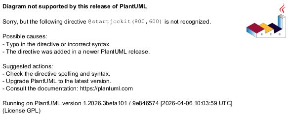

@startjcckit(800,600)
data/curves = curve1 curve2 curve3
data/curve1/title = curve 1
data/curve1/x = 0.2 0.3 0.4 0.5
data/curve1/y = 0.3 0.1 0.2 0.35
data/curve2/title = curve 2
data/curve2/x = 0.2 0.3 0.4 0.5 0.6 0.7 0.8
data/curve2/y = 0.25 0.6 0.4 0.6 0.5 0.3 0
data/curve3/title = curve 3
data/curve3/x = 0.5 0.6 0.7 0.8 0.9
data/curve3/y = 0.55 0.54 1.65 0.35 0.73
paper = 0 0 1 0.6
background = 0xffffff
plot/initialHintForNextCurve/className = jcckit.plot.PositionHint
plot/initialHintForNextCurve/position = 0 0.1
plot/coordinateSystem/origin = 0.05 0.1
plot/coordinateSystem/xAxis/axisLabel = <x>
plot/coordinateSystem/xAxis/grid = true
plot/coordinateSystem/xAxis/gridAttributes/lineColor = 0x808080
plot/coordinateSystem/xAxis/automaticTicCalculation = false
plot/coordinateSystem/xAxis/numberOfTics = 6
plot/coordinateSystem/xAxis/ticLabelAttributes/fontSize = 0.03
plot/coordinateSystem/xAxis/axisLabelAttributes/fontSize = 0.05
plot/coordinateSystem/xAxis/axisLabelAttributes/textColor = 0xaa
plot/coordinateSystem/yAxis/axisLabel = factor
plot/coordinateSystem/yAxis/axisLabelPosition = 0.85 0.1
plot/coordinateSystem/yAxis/axisLabelAttributes/fontSize = 0.05
plot/coordinateSystem/yAxis/axisLabelAttributes/textColor = 0xee
plot/coordinateSystem/yAxis/axisLabelAttributes/verticalAnchor = top
plot/coordinateSystem/yAxis/ticLength = -0.006
plot/coordinateSystem/yAxis/ticLabelPosition = 0.81 0
plot/coordinateSystem/yAxis/ticLabelAttributes/fontSize = 0.03
plot/coordinateSystem/yAxis/ticLabelAttributes/fontStyle = bold
plot/coordinateSystem/yAxis/ticLabelAttributes/horizontalAnchor = left
defaultDefinition/symbolFactory/className = jcckit.plot.SquareSymbolFactory
defaultDefinition/symbolFactory/size = 0.015
defaultDefinition/symbolFactory/attributes/className = jcckit.graphic.BasicGraphicAttributes
defaultDefinition/symbolFactory/attributes/lineColor = 0
defaultDefinition/symbolFactory/attributes/lineThickness = 0.002
defaultDefinition/lineAttributes/className = jcckit.graphic.ShapeAttributes
defaultDefinition/lineAttributes/linePattern = 0.01 0.005
defaultDefinition/lineAttributes/lineThickness = 0.005
defaultDefinition/lineAttributes/lineColor = 0xca
plot/curveFactory/definitions = def1 def2 def3
plot/curveFactory/def1/ = defaultDefinition/
plot/curveFactory/def1/symbolFactory/className = jcckit.plot.BarFactory
plot/curveFactory/def1/symbolFactory/size = 0.03
plot/curveFactory/def1/symbolFactory/attributes/fillColor = 0xffca00
plot/curveFactory/def1/withLine = false
plot/curveFactory/def2/ = defaultDefinition/
plot/curveFactory/def2/symbolFactory/className = jcckit.plot.CircleSymbolFactory
plot/curveFactory/def2/symbolFactory/attributes/fillColor = 0x8000
plot/curveFactory/def2/symbolFactory/attributes/lineColor =
plot/curveFactory/def3/ = defaultDefinition/
plot/legend/upperRightCorner = 0.84 0.54
plot/legend/boxAttributes/fillColor = 0xeeeeee
plot/legend/lineLength = 0.035
@endjcckit